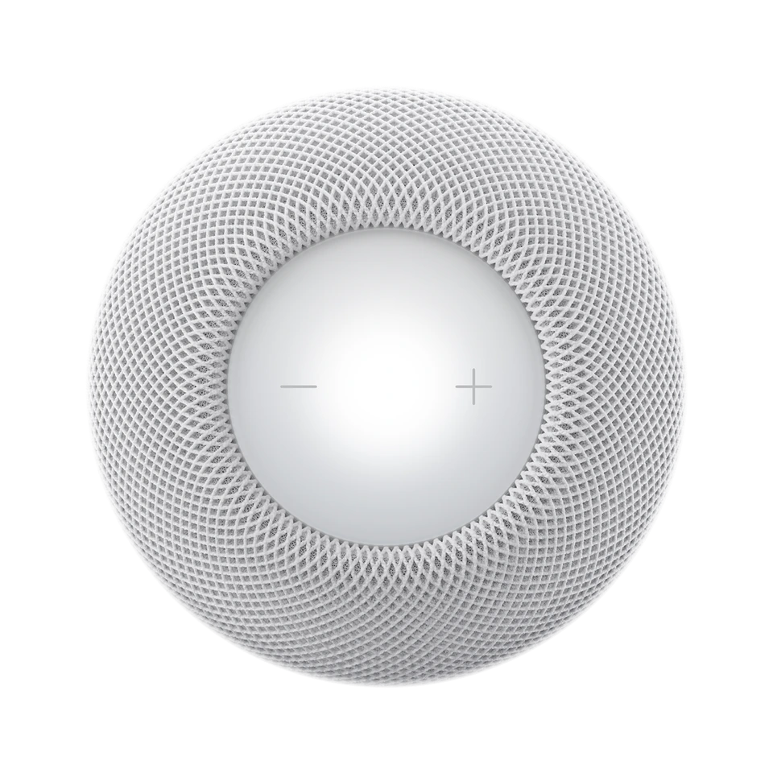
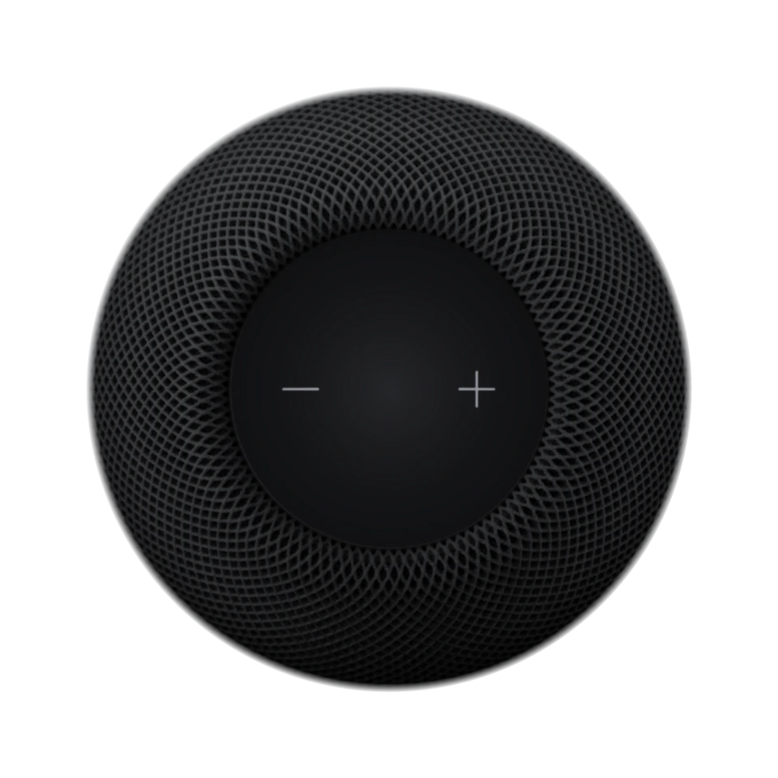

装好，就不用管了。
图标就在系统托盘里，点开就用。不用另装任何东西。
整台电脑的声音，都送到同一网络里的 HomePod，一台或者几台。不用切系统输出，也不用管是哪个 app。
第一次打开，系统会拦一下。先看安装说明Windows 10 · 11macOS 14.4+（Apple 芯片）免费 · GPL-3.0
图标就在系统托盘里，点开就用。不用另装任何东西。
HomePod 会自己出现在列表里。要密码的，输一次就记住。想多连一台，再点一下就行。
浏览器、游戏、播放器、会议，声音全都送过去。macOS 还能只送选中的 app。
声音跟着接收器的时钟走。原样送出，不早不晚。顶部的光，跟着封面换色。
一台电脑同时连接多台接收器，一起播放。加一台会短暂停一下；撤一台，其他的接着放。
200 ms、1.5 s、2 s 三档预设，也可以自己填 20 到 2000 ms。切档会短暂重启音频流。
歌一放，曲名、艺人、进度、封面，自己出现在托盘里。
HomePod 自己配对，Apple TV 出配对码，Mac 接收器要密码。输过一次就记住。
封面取三色，切歌就换。也能手选六套模板。
不同型号、不同代，都能配。两台独立的 AirPlay 2 接收器，想怎么搭就怎么搭。
仅 HomePod。先在“家庭”app 打开“声音光晕”。


没有 WebView，没有常驻服务。退出后，什么都不留下。
音频只在本机和接收器之间直传，不经过任何服务器。接收器用 mDNS 发现，必要时补一次直接查询。
密码只问一次，存进 Windows 凭据管理器（DPAPI）或 macOS 钥匙串。日志里不会出现密钥。
哪台接收器、哪个系统版本、跑通了哪条链路，都写在仓库的验证记录里。
Windows 没有系统级的 AirPlay 发送。macOS 只能把整机输出切到 AirPlay，没有延迟档位，也看不到接收器细节。声渡按每台接收器的方式配对、对时；连接时本机扬声器静音，断开就恢复，不会两边一起响。全在一个托盘图标里。
真机验证过：HomePod 和 HomePod mini（软件 27）、HomePod 立体声组、Mac 的 AirPlay 接收器（包括设了密码的）。Apple TV 的屏幕 PIN 配对已经实现，但还没在实机验证。只支持 FairPlay 的电视不在支持范围；声渡在发现阶段就会标出来，不会静默连上。macOS 版仅支持 Apple 芯片；Windows 版为 x64。
多半是权限没放行。Windows 第一次启动会弹防火墙提示，选「允许」，发现和 PTP 都要入站 UDP；macOS 15 起要在「系统设置 → 隐私与安全性」里允许本地网络。放行后重开应用，列表就回来了。
预设最低 200 ms，自定义能到 20 ms。低于 200 ms 稳不稳，要看接收器。看视频用低延迟 200 ms，听音乐用标准 1.5 s，网络不稳就切稳定 2 s。
正在播放时加一台，其余设备会短暂停顿，然后继续；撤掉一台，其他的接着放。
Windows 在 SmartScreen 里点「更多信息 → 仍要运行」。macOS 到「系统设置 → 隐私与安全性」底部，点「仍要打开」。安装包还没有代码签名，所以会被拦，不是它有问题。源码整份在 GitHub 上，可以自己编译比对。
不会。唯一的对外请求是版本更新检查，只连 GitHub。
都不需要。免费，无账号，装完就能用。源码整份在 GitHub 上，想自己编译也行。
声渡只发送音频。视频和投屏需要 FairPlay，不在设计范围内。碰到只支持 FairPlay 的接收器，它会直接说明原因，不会连上却没声音。